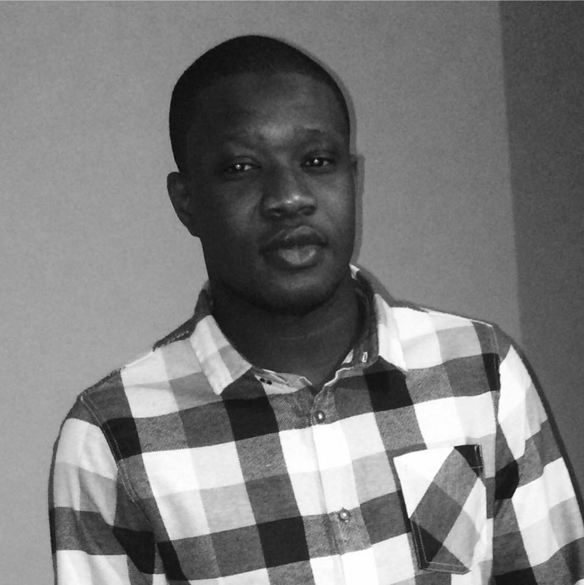

TEAM
Modou Lamin Sonko
Modou Lamin Sonko is a second-year student at the University of Northampton, he is currently on a computing course with foundation. He has a wide range of experience working before his studies, he has worked in the food industry as a chef and a quality controller. He now works in the security industry.
These experiences in the different industries have made him understand the value and importance of team work and he have acquired a lot of transferable skills that will benefit him in the computing industry.
He has a background in business administration and currently holds a diploma in business administration, certified by ICM (institute of commercial management).
Modou enjoys running and weight lifting during his leisure time.
Ifrim Madalin
Nicolae Ifrim has been tinkering with computers since a very young age, he is currently studying for a Computing degree at the University of Northampton. Previously worked as a team leader, developing ideas and projects in Romania.
In 2013 one of these projects was sold to an online store which integrated the algorithms for own use, using those money he managed to get to UK and start as a student to get a degree, in 2016.
He enjoys hiking, watching movies and has a passion for astronomy.